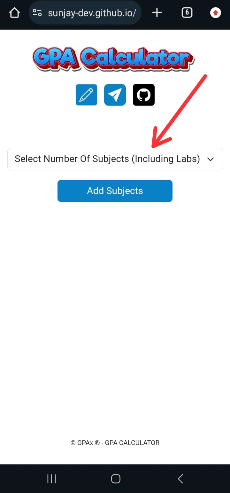
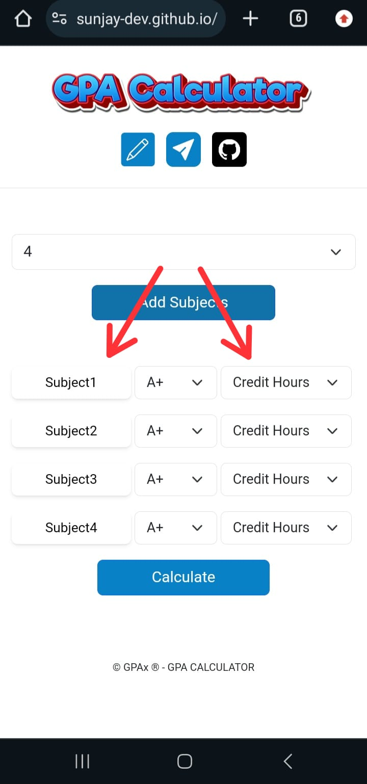
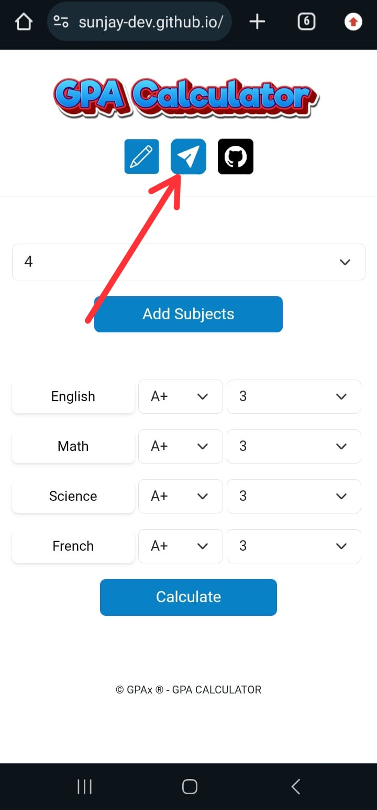

Steps to Create Your Custom GPA Calculator
Step 1: Choose the Number of Subjects
Open the Calculator, and select the number of subjects you have for the semester.

Step 2: Add Subject Names and Credit Hours
Once you've chosen the number of subjects, you can enter the Subject names and the corresponding Credit hours.

Step 3: Generate the Shareable Link
After entering all the Subject names and Credit hours, click the "Share" button. This will generate a unique link that can be shared with others. The next time the link is opened, the Subject names and Credit hours will already be pre-filled.

Step 4: Copy the Generated Link
Once the link is generated, you can copy it and share it with anyone. They will not need to enter Subject names and Credit hours manually!

Important Notes
- The subject names are optional, but the credit hours are required for calculating the GPA.
- You can share the generated link with anyone, and the subjects and credit hours will be pre-filled for them.